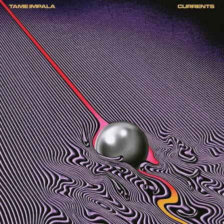
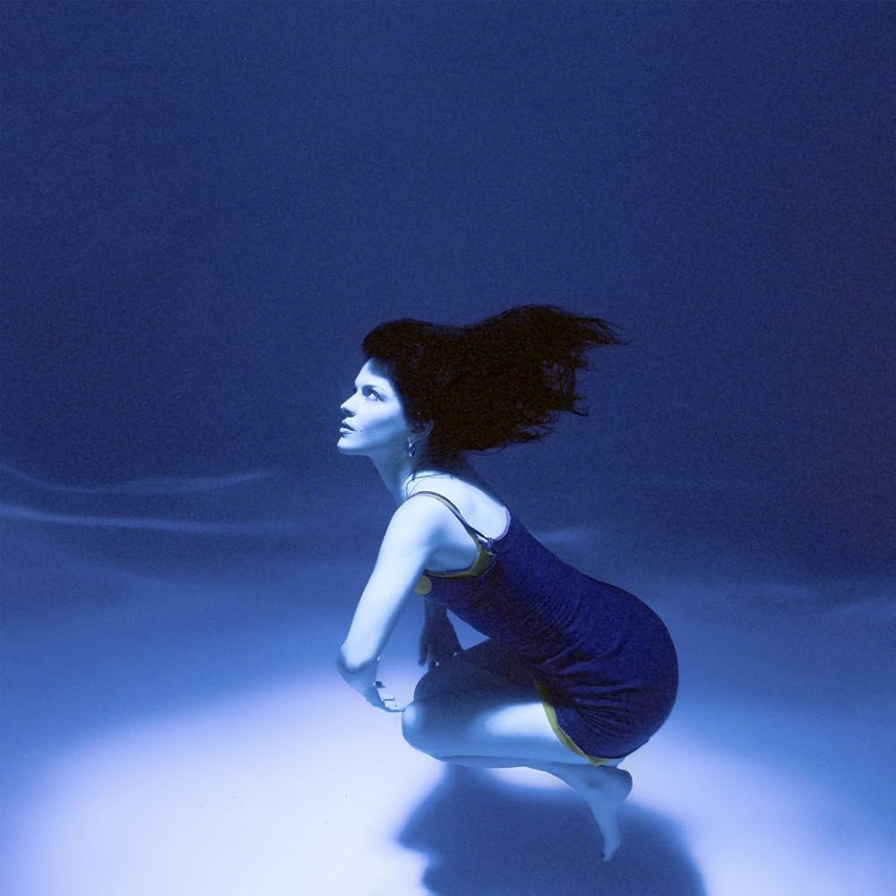
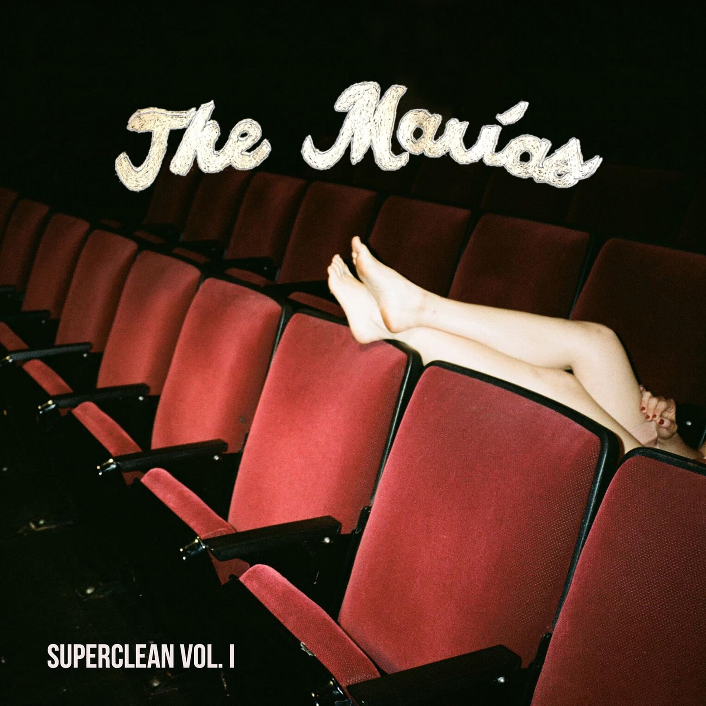
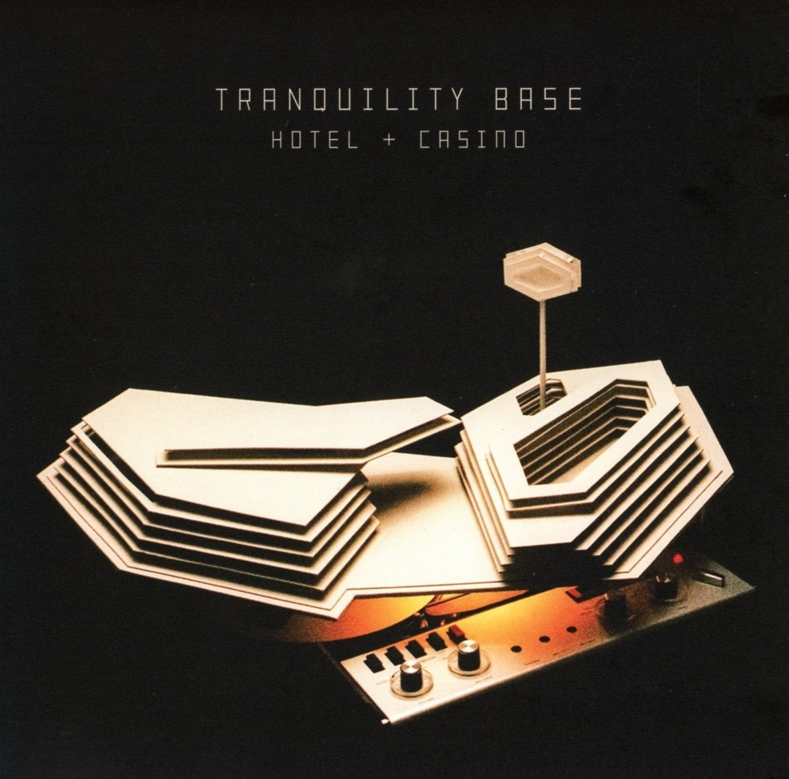

The Slow Rush
Artista: Tame Impala
Ano de Lançamento: 2020
Minha review: Um álbum um pouco menos psicodélico que o Currents e mais voltado para o pop e eletrônico, mas ainda mantendo toda a identidade sonora do Tame Impala. A música One More Hour, Posthumous Forgiveness e Is It True são muito dignas de serem ouvidas.
Nota: 10/10

Escute no SpotifyCurrents
Artista: Tame Impala
Ano de Lançamento: 2014
Minha review: Esse álbum foi pessoalmente marcante na minha adolescencia e vida adulta. Conta com músicas psicodélicas e muito autorais, como Let It Happen, The Less I Know The Better e Eventually. É um álbum que definitivamente popularizou o Tame Impala e o colocou no mapa da música mundial. Um dos meus álbuns favoritos de todos os tempos.
Nota: 10/10

Escute no SpotifySubmarine
Artista: The Marias
Ano de Lançamento: 2019
Minha review: Esse álbum com certeza superou a altíssima qualidade de Cinema e Superclean que já haviam definido um padrão altíssimo de qualidade para a banda. Submarine traz melancolia, superação e muita tristeza. Foi inspirado nos sentimentos de Maria Zardoya e Josh Conway após o término de um relacionamento. É um álbum que definitivamente vale a pena ouvir.
Nota: 10/10
Astroworld
Artista: Travis Scott
Ano de Lançamento: 2018
Minha review: Um álbum de hip-hop que considero amplamente injustiçado por não ter recebido o Grammy de Melhor Álbum de Rap. Tem uma vibe psicodélica, envolvente e imersiva. A produção claramente é impecável, contando com Kevin Parker, Frank Dukes, Mike Dean e outros produtores de renome. É um álbum que vale muito a pena ouvir. Minhas favoritas são Astrothunder, Houstonfornication e Can't Say.
Nota: 10/10

Escute no SpotifySuperclean Vol. 1 e Vol. 2
Artista: The Marias
Ano de Lançamento: 2019
Minha review: Esse álbum foi meu primeiro contato com a banda The Marias e me fez me apaixonar por eles. É um álbum que mistura jazz, pop e psicodelia de forma brilhante. Todas as músicas do volume 2 são pessoalmente perfeitas e as do volume 1 são muito boas também.
Nota: 10/10
AM
Artista: Arctic Monkeys
Ano de Lançamento: 2013
Minha review: Eu considero essa álbum como um dos maiores influenciadores de indie e rock moderno da década de 2010. A influência desses caras foi surreal. Comparando com os álbuns mais recentes, AM segue uma vibe "rebelde", "descolada" e divertida.
Nota: 10/10

Escute no SpotifyTranquility Base Hotel & Casino
Artista: Arctic Monkeys
Ano de Lançamento: 2018
Minha review: Não é novidade que a banda goste de mudar de direção a cada álbum, mas, desta vez, a reinvenção foi especialmente radical. O disco aposta em uma sonoridade muito mais experimental, explorando influências de lounge, jazz e space rock. Para os fãs mais ávidos de *AM* e do rock moderno que consagrou a banda, essa mudança pode ter sido uma grande desilusão. Para mim, porém, foi uma agradável surpresa. O álbum é repleto de referências ao cinema, à literatura e a diversas outras formas de arte, construindo uma identidade própria e bastante singular. Vale a pena ouvi-lo, especialmente se você já sente que o som de *AM* e do rock moderno ficou repetitivo — ou, como diria, se a fórmula já grudou demais nos seus ouvidos.
Nota: 10/10
The Less I Know The Better
Artista: Tame Impala
Ano de Lançamento: 2015
Minha review: O maior clássico do Tame Impala. Baixo lendário e um dos refrões mais marcantes da década.
Nota: 10/10
New Person Same Old Mistakes
Artista: Tame Impala
Ano de Lançamento: 2015
Minha review: Atmosférica. Minha favorita do Currents. Longa, experimental e extremamente bem produzida. Uma verdadeira obra-prima.
Nota: 10/10